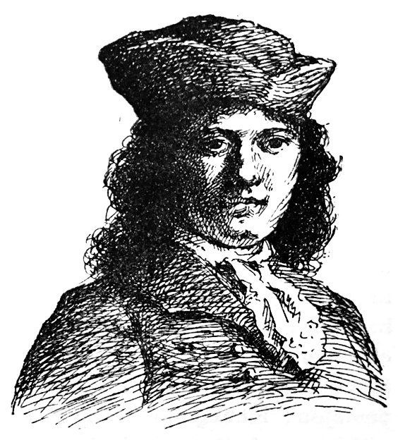

Kiel Kandid estis edukata en bela kastelo, kaj kiel li estis el ĝi forpelata.
En Vestfalio, en la kastelo de lia barona moŝto Thunder-ten-tronckh, estis junulo al kiu la naturo estis doninta plej mildajn ecojn. Lia fizionomio spegulis lian animon. Li havis sufiĉe da juĝkapablo kun la plej simpla spirito; pro tio, mi kredas, oni nomis lin Kandid. La malnovaj servistoj suspektis, ke lia patrino estis la fratino de lia barona moŝto kaj lia patro iu nobelo el la ĉirkaŭaĵo, kun kiu ŝi neniam volis edziniĝi, tial ke li povis doni pruvon nur pri sepdek unu gradoj da nobeleco kaj ke la cetero de lia generacia tabelo forperdiĝis.
Lia barona moŝto estis unu el la plej potencaj sinjoroj el Vestfalio, ĉar lia kastelo havis pordon kaj fenestrojn. Ĝia granda ĉambro estis eĉ ornamita per tapeto. Ĉiuj hundoj el liaj birdo-kortoj konsistigis se necese ĉasantaron; liaj stalistoj estis ankaŭ ĉevalistoj; la vilaĝa vikario estis lia kapelpastro. Ĉiuj nomis lin mia sinjorega moŝto, kaj ili ridis, kiam fantazie li rakontis.
La barona sinjorino pezis tri cent kvindek funtojn kaj estis pro tio treege ŝatata; ŝi akceptis la gastojn kun digno, kiu igis ŝin ankoraŭ pli respektinda. Ŝia deksepjara filino Kunegond estis tre kolororiĉa, freŝa, grasa, dezirdona. La filo de l' barono ĉiurilate ŝajnis esti inda je sia patro. La guvernisto Panglos (↓1) estis la hejma orakoldiranto kaj la malgranda Kandid aŭskultis liajn instruojn kun la tuta sincero, akordiĝanta kun lia aĝo kaj lia karaktero.
Panglos instruis la metafizik-teologi-kosmologologion. Li mirinde bone pruvis, ke ne ekzistas efiko sen kaŭzo, kaj ke, en la plejeble bona mondo (↓2), la kastelo de lia barona moŝto estas la plej bela el ĉiuj kasteloj, kaj la sinjorino la plejeble bona el la baroninoj.
«Estas pruvite, li diris, ke la aferoj ne povas esti aliaj ol ili estas: ĉar ĉio estante farita por iu celo, ĉio rilatas nepre la plej bonan celon. Atentu bone, ke la nazoj estas faritaj por porti okulvitrojn; tial ni havas okulvitrojn. La kruroj videble estas faritaj por esti ŝtrumpe vestataj. La ŝtonoj estis formitaj por esti prilaborataj kaj por konstrui per ili kastelojn; tial lia sinjorega moŝto havas tre belan kastelon; la plej granda barono el la provinco devas ja esti loĝata plej bone; kaj la porkoj estante faritaj por esti manĝataj, ni do manĝas porkaĵon dum la tuta jaro: sekve, kiuj diris, ke ĉio estas bona, tiuj diris sensencaĵon; necesis diri, ke ĉio estas la plej bona.»

Kandid
Kandid atente aŭskultis, kaj naive kredis: ĉar li trovis F-inon Kunegond treege bela, kvankam neniam li kuraĝis tion diri al ŝi. Li konkludis, ke post la feliĉo esti barono de Thunder-ten-tronckh, la dua grado de feliĉo estas esti F-ino Kunegond; la tria, vidi ŝin ĉiutage; kaj la kvara, aŭdi majstron Panglos, la plej grandan filozofon el la provinco, kaj sekve el la tuta tero.
Iun tagon, Kunegond, promenante apud la kastelo, en arbareto, kiun oni nomis parko, vidis doktoron Panglos, kiu donis lecionon pri eksperimenta fiziko al la ĉambristino de ŝia patrino, brunulineto tre bela kaj obeema. Tial ke F-ino Kunegond estis tre inklina lerni la sciencojn, ŝi silente observadis la ripetitajn eksperimentojn kiujn ŝi ĉeestis; ŝi klare vidis la sufiĉan kialon (↓3) de la doktoro, la efikojn kaj la kaŭzojn, kaj tute maltrankviligite, tute enpensiĝinte, ŝi foriris kun la deziro esti klera, revante, ke ŝi bone povus esti la sufiĉa kialo por la juna Kandid, kiu bone povus ankaŭ esti la ŝia.
Revenante al la kastelo, ŝi renkontis Kandid kaj ruĝiĝis; Kandid ankaŭ ruĝiĝis; ŝi salutis lin per tremetanta voĉo, kaj Kandid parolis al ŝi, ne sciante, kion li diras. La morgaŭan tagon, post la tagmanĝo, ĉe la detabliĝo, Kunegond kaj Kandid troviĝis malantaŭ ekranego; Kunegond lasis fali sian naztukon. Kandid ĝin levis; ŝi senpeke prenis lian manon, la junulo kisis senpeke la manon de la juna fraŭlino kun viveco, sentemo kaj tute aparta afabla plaĉemo; iliaj buŝoj renkontiĝis, iliaj okuloj ardis, iliaj genuoj tremis, iliaj manoj ŝoviĝis. Lia barona moŝto Thunder-ten-tronckh preterpasis la ekranegon, kaj, vidante la kaŭzon kaj la efikon, forpelis Kandid el la kastelo per piedbatoj sur la postaĵon; Kunegond svenis; tuj rekonsciiĝinte, ŝi estis vangofrapata de la barona sinjorino; kaj ĉio estis konsternita en la plejeble bela kaj agrabla el la kasteloj.